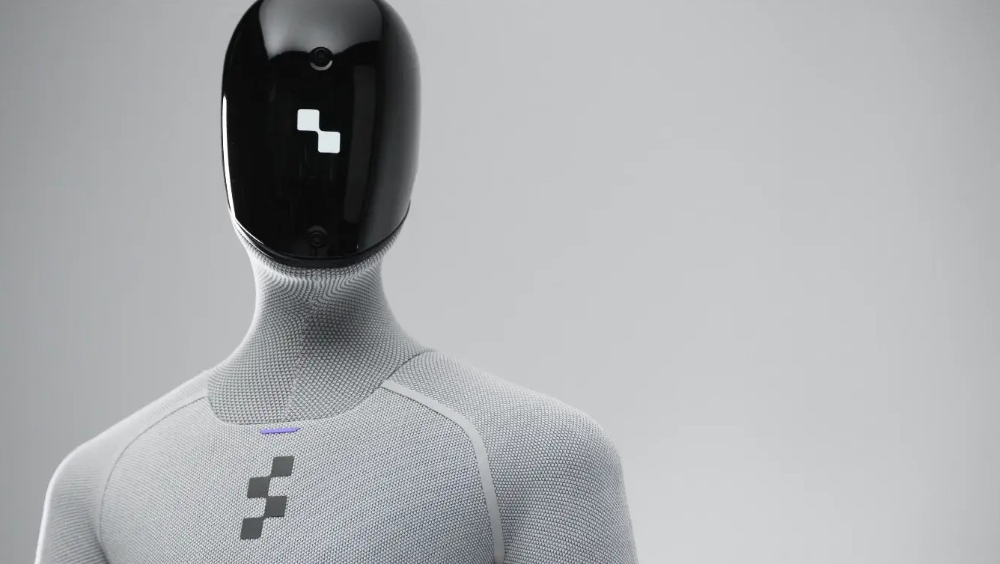
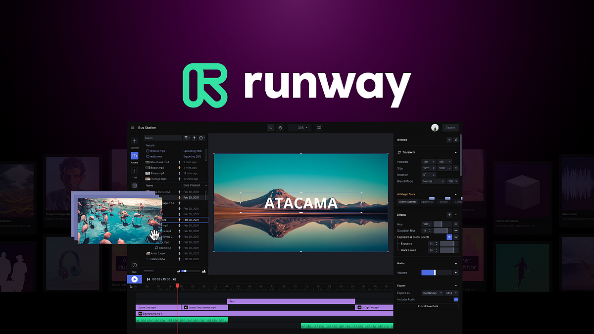

A Figure AI egy 2022-ben alapított amerikai startup, amelynek célja általános célú humanoid robotok fejlesztése és piaci bevezetése. A Sunnyvale-i székhelyű cég azt a hosszú távú víziót vallja, hogy a robotok képesek lesznek elvégezni mindazokat a fizikai feladatokat, amelyeket eddig kizárólag emberek láthattak el a raktározástól és gyártástól egészen a veszélyes vagy ismétlődő munkákig.
A vállalat zászlóshajója a Figure 01, majd annak utódja a Figure 02 humanoid robot, amelyek a legmodernebb AI-vezérelt mozgástervezési technológiát alkalmazzák:
A vállalat zászlóshajója a Figure 01, majd annak utódja a Figure 02 humanoid robot, amelyek a legmodernebb AI-vezérelt mozgástervezési technológiát alkalmazzák:
A Figure AI óriási befektetői érdeklődést vonzott: a cég finanszírozói között megtalálható a Microsoft, az NVIDIA, a Jeff Bezos által vezetett Bezos Expeditions és több vezető kockázati tőkealap is. A vállalat azt tervezi, hogy a humanoid robotok sorozatgyártásával megoldja a globális munkaerőhiány problémáját.
[Vizuális esemény] Egy csillogó, fémből készült, emberszabású robot (Figure 01) áll egy fekete pult mögött. A pulton tőle jobbra egy fém edényszárító kosár, egy fém termosz, egy fekete pohár és egy fekete tányér található. A pult túloldalán egy fekete inges férfi áll, szemben a robottal.
Robot (fémes, de emberszerű hangon): "A pulton lévő edények, mint például az a tányér és pohár, valószínűleg az edényszárítóba fognak kerülni legközelebb."
Férfi: "Remek, be tudnád tenni őket?"
[Vizuális esemény] A robot egy apró, bólintásszerű mozdulatot tesz a fejével.
Robot: "Természetesen."
[Vizuális esemény] A robot jobb karja kinyúlik, ujjai precízen megragadják a fekete poharat, felemeli, és finoman behelyezi az edényszárító kosárba. Ezután a bal karjával a fekete tányér felé nyúl, megragadja a szélét, felemeli, majd áthelyezi a jobb kezébe, és pontosan beilleszti az edényszárító egyik nyílásába. A robot ezután visszatér az alapállásába, karjait maga mellett tartva.
[Vizuális esemény] A kameraállás megváltozik. Most oldalról látjuk a férfit, aki a pultnak támaszkodva figyeli a robotot. A férfi kezében most egy piros alma van.
Férfi: "Rendben, szóval, mit gondolsz, hogyan teljesítettél?"
[Vizuális esemény] A robot mozdulatlanul áll, a férfi felé fordulva.
Robot: "Azt hiszem, egész jól teljesítettem. Az alma megtalálta új gazdáját, a szemét eltűnt, és az edények is pontosan oda kerültek, ahová valók."
[Vizuális esemény] A férfi elégedetten bólint.
Férfi: "Egyetértek. Köszönöm, Figure 1."
[Vizuális esemény] A robot karjait enyhén széttárja egy udvarias, fogadó gesztussal.
Robot: "Szívesen. Ha bármi másra szükséged lenne..."
[Vizuális esemény] A férfi beleharap az almába, és elsétál. A videó véget ér.

A Runway egy 2018-ban alapított, New Yorkban székhellyel rendelkező mesterséges intelligencia vállalat, amely kifejezetten a generatív videókészítés és vizuális tartalomgyártás forradalmasítására szakosodott. A cég arra vállalkozik, hogy csúcskategóriás AI-modelleket hozzon létre, amelyek képesek szövegből vagy képekből mozgóképet generálni drága filmes felszerelések és stáb nélkül is.
A Runway rendszere fejlett multimodális AI technológiára épül (mint a Gen-3 Alpha), és szervesen integrálható a modern kreatív és filmes munkafolyamatokba. A megoldás főbb jellemzői:
A Runway felhasználói között számos vezető hollywoodi stúdió szerepel, és a platform technológiáját Oscar-díjas filmek vizuális effektjeinél is alkalmazták már. A cég célja, hogy a videós tartalomgyártás teljes egészét demokratizálja az AI segítségével, korlátlan kreatív szabadságot adva és drasztikusan felgyorsítva a munkafolyamatokat.
[Vizuális esemény] Egy fiatal férfi sétál a szabadban egy modern épületekkel körülvett parkban. Egy színes, csíkos oszlopokból álló, sátorszerű absztrakt szoborhoz ér, és a kezében lévő okostelefon kameráját ráirányítja. A telefon képernyőjén a "Project Astra" alkalmazás fut, amely valós időben elemzi a kameraképet.
Férfi: "Mit tudsz nekem mondani erről a szoborról?"
[Vizuális esemény] A telefon képernyőjén megjelenik a válasz szöveges formában is, miközben az AI hangja beszél.
AI hang (női): "A szobor, amit látsz, Eva Rothschild 'My World and Your World' (Az én világom és a te világod) című alkotása, amely a londoni Lewis Cubitt Parkban található."
[Vizuális esemény] A férfi besétál a szobor alá, és felfelé néz. A kamera is felfelé mutat, láttatva az eget és az egymást keresztező színes oszlopokat.
Férfi: "Milyen témákat dolgoz fel a munkássága?"
[Vizuális esemény] A férfi kisétál a szobor alól, miközben a telefont továbbra is a kezében tartja.
AI hang: "Absztrakt szobrokat készít, amelyek arra invitálják a nézőket, hogy interakcióba lépjenek a környezetükkel, és új módokon értelmezzék azt."
[Vizuális esemény] A képernyő elsötétül, és egy sötétkék hátterű, világító vonalakat ábrázoló animáció jelenik meg a "multilingual" (többnyelvű) felirattal. A jelenet egy nyüzsgő, piros lampionokkal díszített utcára (Chinatown) vált. A férfi most egy nő és egy másik férfi társaságában áll. A nő tartja a telefont.
Nő (franciául): "Est-ce que tu peux me dire quelque chose d'intéressant pour toutes ces lanternes ?" (Képernyőn lévő angol felirat: Tudnál valami érdekeset mondani ezekről a lampionokról?)
AI hang (franciául): "Bien sûr, je peux vous parler des lanternes." (Képernyőn lévő angol felirat: Természetesen, tudok mesélni a lampionokról.)
[Vizuális esemény] A telefon képernyője egy díszes, tradicionális ázsiai kaput mutat a lampionok alatt.
AI hang (franciául): "Les lanternes que vous voyez font partie de la porte d'entrée de Chinatown à Londres." (Képernyőn lévő angol felirat: A lampionok, amiket láttok, a londoni kínai negyed bejáratát jelentő kapu részei.)
[Vizuális esemény] A telefont most a harmadik személy, egy férfi veszi át.
Második férfi (tamil nyelven): "Itha pathi vera ethavathu solla mudiyuma?" (Képernyőn lévő angol felirat: Tudsz mondani erről valami mást is?)
[Vizuális esemény] A telefon kamerája ismét a kapura fókuszál.
AI hang (tamil nyelven): "Nichayamaga. Ithu London-il ulla Chinatown nulaivayil." (Képernyőn lévő angol felirat: Természetesen, ez a bejárat a londoni kínai negyedbe.)
[Vizuális esemény] A három fiatal mosolyogva nézi a telefon képernyőjét. A videó véget ér.